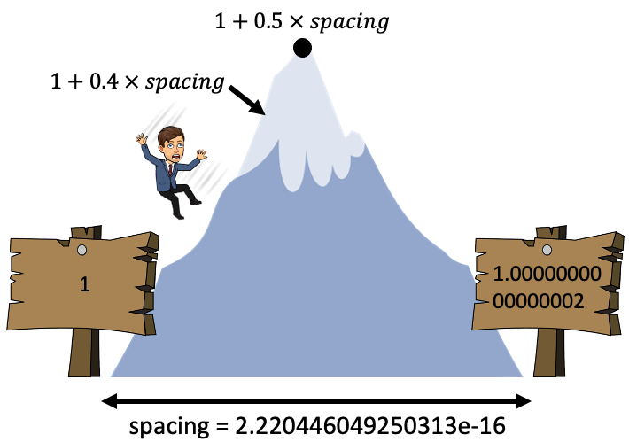

Floating point numbers and rounding errors - a crash course in Python
Learn how floating point numbers are stored and why it matters.

Introduction
Computers can’t always represent numbers as accurately as some of us might think. For example:
>>> a = 0.1 + 0.2
>>> b = 0.3
>>> a == b
False
The above might come as a shock to many readers. In this short post, we’re going to find out what’s going on.
Integers
# We'll use these imports later on
>>> import math
>>> import struct
>>> import numpy as np
The first part of the story is integers. Growing up, we learn to use a base-10 number system (or “denary” system). Denary is based on powers of 10 and we can use the digits 0 - 9 to help us represent numbers. For example, the number 104 can be interpreted as:
- 4 x 1 ($10^0$)
- 0 x 10 ($10^1$)
- 1 x 100 ($10^2$)
Let’s put that in an easy-to-read tabular format:
| Unit | $10^2$ | $10^1$ | $10^0$ |
|---|---|---|---|
| Value | 100 | 10 | 1 |
| Number of units | 1 | 0 | 4 |
| Total | 100 | 0 | 4 |
In contrast, computers use a base-2 system (i.e., “binary”) to store numbers. Binary is based on powers of 2 rather than powers of 10 and we only have two numbers, 0 and 1, to work with (think of them as “off” and “on” switches respectively). In binary, 104 looks like:
>>> f"{104:b}"
'1101000'
In our tabular format:
| Unit | $2^6$ | $2^5$ | $2^4$ | $2^3$ | $2^2$ | $2^1$ | $2^0$ |
|---|---|---|---|---|---|---|---|
| Value | 64 | 32 | 16 | 8 | 4 | 2 | 1 |
| Number of units | 1 | 1 | 0 | 1 | 0 | 0 | 0 |
| Total | 64 | 32 | 0 | 8 | 0 | 0 | 0 |
We call these single binary 0/1 values, bits. We can see that we needed 7 bits to represent the number 104. We can confirm that using the .bit_length() integer method in Python:
>>> x = 104
>>> x.bit_length()
7
Any integer can be represented in binary (if we have enough bits). The range of unsigned integers we can represent with N bits is: 0 to $2^{N}-1$. However, we often reserve one bit to specify the sign (- or +) of a number, so the range of signed integers you can represent with N bits is: $-2^{N-1}$ to $2^{N-1}-1$.
For example, with 8 bits we can represent the unsigned integers 0 to 255, or the signed integers -128 to 127:
>>> bits = 8
>>> print(f"unsigned min: 0")
>>> print(f"unsigned max: {2 ** bits - 1}")
>>> print(f"signed min: {-2 ** (bits - 1)}")
>>> print(f"signed max: {2 ** (bits - 1) - 1}")
unsigned min: 0
unsigned max: 255
signed min: -128
signed max: 127
We can confirm all this with the helpful NumPy function np.iinfo():
>>> np.iinfo("int8") # signed 8-bit integer
iinfo(min=-128, max=127, dtype=int8)
>>> np.iinfo("uint8") # unsigned 8-bit integer
iinfo(min=0, max=255, dtype=uint8)
>>> np.iinfo("int16") # signed 16-bit integer
iinfo(min=-32768, max=32767, dtype=int16)
>>> np.iinfo("int64") # signed 64-bit integer
iinfo(min=-9223372036854775808, max=9223372036854775807, dtype=int64)
It’s interesting to see what happens if you try to store an integer outside the representable range. In NumPy, you actually won’t get an error. Instead, NumPy will change your number to be within the representable range, by just looping around the range:
>>> np.array([-87, 31], "int8") # this is fine
array([-87, 31], dtype=int8)
>>> np.array([-129, 128], "int8") # these numbers are outside the range
array([ 127, -128], dtype=int8)
Fractional Numbers
So we’ve looked at integers above, but what about fractional numbers like 14.75? In denary, the “decimal point” helps us represent these fractional numbers. In our tabular format, 14.75 looks like:
| Unit | $10^1$ | $10^0$ | $10^{-1}$ | $10^{-2}$ |
|---|---|---|---|---|
| Value | 10 | 1 | 0.1 | 0.01 |
| Number of units | 1 | 4 | 7 | 5 |
| Total | 10 | 4 | 0.7 | 0.05 |
That seems pretty natural, and in binary it’s much the same! We just need to introduce a “binary point”. Anything to the left of the binary point has a positive exponent and anything to the right of the binary point has a negative exponent. So in binary, 14.75 would look like this: 1110.11. In tabular format:
| Unit | $2^3$ | $2^2$ | $2^1$ | $2^0$ | $2^{-1}$ | $2^{-2}$ |
|---|---|---|---|---|---|---|
| Value | 8 | 4 | 2 | 1 | 0.5 | 0.25 |
| Number of units | 1 | 1 | 1 | 0 | 1 | 1 |
| Total | 8 | 4 | 2 | 0 | 0.5 | 0.25 |
Fixed Point Numbers
As we saw earlier, we typically have a fixed number of bits to work with when storing a number, e.g., 8, 16, 32, 64 bits. This is because, in layman’s terms, having a fixed number of bits makes it easier for our computer to allocate and use memory.
So if we have a fixed number of bits, say 8 bits, how do we decide where to put the binary point to help us store fractional numbers? Well with 8 bits, we could put 4 bits on the left and 4 on the right:
| Unit | $2^3$ | $2^2$ | $2^1$ | $2^0$ | $2^{-1}$ | $2^{-2}$ | $2^{-3}$ | $2^{-4}$ |
|---|---|---|---|---|---|---|---|---|
| Value | 8 | 4 | 2 | 1 | 0.5 | 0.25 | 0.125 | 0.0625 |
In this case, the largest and smallest (closest to 0) numbers we could represent in the unsigned case are:
>>> (2.0 ** np.arange(-4, 4, 1)).sum()
15.9375
>>> 2 ** -4
0.0625
But what if we wanted to represent numbers larger than this? We could shift the binary point right, so we have 6 on the left and 2 on the right, then our range would be:
>>> (2.0 ** np.arange(-2, 6, 1)).sum()
63.75
>>> 2 ** -2
0.25
As you can see, we get this trade-off between being able to represent large numbers and small numbers depending on where we put our binary point. But is there a format that let’s us represent both large and small numbers? Read on…
Floating Point Numbers
At this point, you may have read “floating point” and had a little “ah-ha!” moment because you see where we’re going. Rather than having a fixed location for our binary point, we could let it “float” around depending on what number we want to store. Recall “scientific notation” in the denary system, which for the number 1234 looks like $1.234 \times 10^3$, or for computers we usually use e for shorthand:
>>> f"{1234:.3e}"
'1.234e+03'
I want you to notice that the “exponent” is actually controlling the location of the decimal point, Consider the following numbers:
- $1.234 \times 10^0 = 1.234$
- $1.234 \times 10^1 = 12.34$
- $1.234 \times 10^2 = 123.4$
- $1.234 \times 10^3 = 1234.$
See how by changing the value of the exponent we can control the location of the floating point and represent a range of values? We’ll be using the exact same logic with the binary system to come up with our “floating point” format. This is floating point format:
$$1.M \times 2^E$$
- $M$ = “mantissa”
- $E$ = “exponent”
Note that the $.$ is a “binary point”, digits on the left are 2’s with +ve exponents, digits on the right are 2’s with negative exponents, as before.
Consider the number 10. $10 = 1.25 \times 8 = 1.25 \times 2^3$. So $M=.25$ and $E=3$. But we want binary, not decimal, so $M=01$ and $E=11$ (I’ll leave this to you to work that out). Therefore, 10 in floating point is: $1.01 \times 2^{11}$.
This is where the magic happens, just as the exponent of 10 in denary scientific notation defines the location of the decimal point, so too does the exponent of a floating point number define the location of the binary point. For $1.01 \times 2^{11}$, the exponent is 11 in binary which is 3 in decimal - so move the binary point three places to the right: $1.01 \times 2^{11} = 1010.$ What is 1010 in binary?
>>> int("1010", base=2)
10
It’s 10 of course! How cool is that - we now have this “floating point” format that uses an exponent to help us represent both small and large fractional numbers (unlike fixed point where we would have to choose one or the other!) I wrote a function binary() to display any number in floating point format (don’t worry about the code too much):
def binary(number: float):
"""Print a number's floating point representation."""
packed = struct.pack("!d", float(number))
integers = [c for c in packed]
binaries = [bin(i) for i in integers]
stripped_binaries = [s.replace("0b", "") for s in binaries]
padded = [s.rjust(8, "0") for s in stripped_binaries]
final = "".join(padded)
sign, exponent_plus_1023, mantissa = final[0], final[1:12], final[12:]
sign_str = "" if int(sign) == 0 else "-"
mantissa_base10 = (int(mantissa, 2) / 2 ** 52) # shift decimal point from end of binary string to beginning of it
mantissa_base10_str = str(mantissa_base10)[2:] # throw away the leading "0."
mantissa_index = mantissa.rfind("1")
mantissa_index = 0 if mantissa_index == -1 else mantissa_index
exponent_base10 = int(exponent_plus_1023, 2) - 1023
print(f" Decimal: {sign_str}1.{mantissa_base10_str} x 2^{exponent_base10}")
print(f" Binary: {sign_str}1.{mantissa[:mantissa_index + 1]} x 2^{exponent_base10:b}\n")
print(f" Sign: {sign} ({'+' if sign == '0' else '-'})")
print(f"Mantissa: {mantissa[:mantissa_index + 1]} ({mantissa_base10})")
print(f"Exponent: {exponent_base10:b} ({exponent_base10})")
Let’s try out some numbers:
>>> binary(10)
Decimal: 1.25 x 2^3
Binary: 1.01 x 2^11
Sign: 0 (+)
Mantissa: 01 (0.25)
Exponent: 11 (3)
>>> binary(2.998e8) # speed of light
Decimal: 1.11684203147888184 x 2^28
Binary: 1.0001110111101001010111 x 2^11100
Sign: 0 (+)
Mantissa: 0001110111101001010111 (0.11684203147888184)
Exponent: 11100 (28)
>>> binary(6.02214076e23) # one mole
Decimal: 1.9925592330949422 x 2^78
Binary: 1.1111111000011000010111001010010101111100010100010111 x 2^1001110
Sign: 0 (+)
Mantissa: 1111111000011000010111001010010101111100010100010111 (0.9925592330949422)
Exponent: 1001110 (78)
>>> binary(6.62607004e-34) # Planck's constant
Decimal: 1.720226132656187 x 2^-111
Binary: 1.1011100001100000101111010110010101111011100111100001 x 2^-1101111
Sign: 0 (+)
Mantissa: 1011100001100000101111010110010101111011100111100001 (0.720226132656187)
Exponent: -1101111 (-111)
One question you might have about the above: how many bits should I use for the mantissa and how many for the exponent? Well that’s already been decided for you in: IEEE Standard for Floating-Point Arithmetic (
IEEE 754) which is what most computers/software use. You’ll mostly be using the data types float64 and float32:
- Float 64 (also called “double precision”)
- 53 bits for the mantissa
- 11 bits for the exponent
- Float 32 (also called “single precision”)
- 24 bits for the mantissa
- 8 bits for the exponent
Rounding Errors
Many fractional numbers can’t be represented exactly using floating point format. After all, we’re using a finite number of bits to try and represent and infinite amount of numbers. This will inevitably lead to rounding errors - your computer will always round numbers to the closest representable number.
For example 0.1 can’t be exactly represented in binary (feel free to try and make 0.1 using floating point format). Python usually hides this fact for us out of convenience, but here is “the real 0.1":
>>> f"{0.1:.60f}"
'0.100000000000000005551115123125782702118158340454101562500000'
So 0.1 is actually represented as a number slightly bigger than 0.1! I wrote a function to work out if a number is stored exactly or inexactly, and to show the rounding error:
def float_rep(num):
"""Print info about whether a float is represented exactly or not."""
if not isinstance(num, float):
raise ValueError("Please enter a floating point number.")
sig_digits = 52 + abs(math.frexp(num)[1])
num_str = f"{num}"
num_str_float = f"{num:.{sig_digits}f}"
print(f"You entered: {num}")
if sum(int(_) for _ in num_str_float[len(num_str) :]) > 0:
print(f"Which is inexactly stored as: {num_str_float}")
else:
print(f"Which is exactly stored as: {num}")
>>> float_rep(0.1)
You entered: 0.1
Which is inexactly stored as: 0.1000000000000000055511151231257827021181583404541015625
>>> float_rep(0.25)
You entered: 0.25
Which is exactly stored as: 0.25
So how bad are these rounding errors? Well we can actually quantify the “spacing” between representable numbers. Before we do, imagine we’re in the decimal system again. For a number with a fixed amount of significant digits, the spacing between that number and the next biggest number with the same format can be determined as the smallest significant digit multipled by the exponent:
| Number | Next Largest | Spacing |
|---|---|---|
| 8.982e0 | 8.983e0 | 0.001e0 = 0.001 |
| 0.001e1 | 0.002e1 | 0.001e1 = 0.01 |
| 3.423e2 | 3.424e2 | 0.001e2 = 0.1 |
Same goes for our binary floating point numbers! The spacing can be determined as the smallest part of the mantissa multiplied by a number’s exponent. What is the smallest part of the mantissa? Well, for float64, we have 53 bits for the mantissa. 1 bit is reserved for the sign of the number, so we have 52 left. Therefore the smallest significant digit is $2^{-52}$.
To be super clear here, this is the floating point format written as powers of 2 for all 52 mantissa bits:
$$2^0{}.{}2^{-1}2^{-2}2^{-3}…{}2^{-50}2^{-51}\boldsymbol{2^{-52}} \times 2 ^ {E}$$
See how $2^{-52}$ is the smallest value we can change? Now, consider the number 1:
>>> binary(1.0)
Decimal: 1.0 x 2^0
Binary: 1.0 x 2^0
Sign: 0 (+)
Mantissa: 0 (0.0)
Exponent: 0 (0)
As you can see, the number 1 has has an exponent of 0. Remember the smallest significant digit multiplied by our exponent gives us the spacing between this number and the next number we can represent with our format. So for the number 1, the spacing is $2^{-52} * 2^0$:
>>> (2 ** -52) * (2 ** 0)
2.220446049250313e-16
NumPy has a helpful function we can use to calculate spacing: np.nextafter(x1, x2) returns the next representable floating-point value after x1 towards x2. The next representable number after 1 should be 1 plus the spacing above, let’s check:
>>> np.nextafter(1, 2)
1.0000000000000002
>>> spacing = np.nextafter(1, 2) - 1
>>> spacing
2.220446049250313e-16
>>> spacing == (2 ** -52) * (2 ** 0)
True
If you do a calculation that puts you somewhere between the space of two numbers, the computer will automatically round to the nearest one. I like to think of this as a mountain range in the computer. The valleys are representable numbers. If a calculation puts us on a mountain side, we’ll roll down the mountain to the closest valley. For example, spacing for the number 1 is $2^{-52}$, so if we don’t add at least half that, we won’t reach the next representable number:
>>> 1 + 0.4 * spacing == 1 # add less than half the spacing
True

>>> 1 + 0.6 * spacing == 1 # add a more than half the spacing
False

We’re working with pretty small numbers here so you might not be too shocked. But remember, the bigger our exponent, the bigger our rounding errors will be!
>>> large_number = 1e25
>>> binary(large_number)
Decimal: 1.03397576569128469 x 2^83
Binary: 1.0000100010110010101000101100001010000000001010010001 x 2^1010011
Sign: 0 (+)
Mantissa: 0000100010110010101000101100001010000000001010010001 (0.03397576569128469)
Exponent: 1010011 (83)
The exponent is 83 so the spacing should be:
>>> spacing = (2 ** -52) * (2 ** 83)
>>> print(f"{spacing:.5e}")
2.14748e+09
That’s just over 2 billion! 1 billion is less than half that spacing, so if we add 1 billion to large_number, we won’t cross the mountain peak, and we’ll slide back down into the same valley:
>>> one_billion = 1e9
>>> 1e25 + one_billion == 1e25 # adding a billion didn't change our number!
True
2 billion is more than half that spacing, so if we add it to large_number, we’ll slide into the next valley (representable number):
>>> two_billion = 2e9
>>> 1e25 + two_billion == 1e25 # adding two billion (more than half the spacing) did change our number
False
Another thing you should know is that, just as with integer data types, there is a biggest and a smallest number you can represent with floating point. You could determine this by hand (by making the mantissa and the exponenet as big/small as possible), but we’ll use NumPy:
>>> np.finfo("float64").max # maximum representable number
1.7976931348623157e+308
>>> np.finfo("float64").min # minimum representable number
-1.7976931348623157e+308
If your calculation results in a number higher than the max, you get an “overflow error”. In NumPy, your number is turned to inf:
>>> np.array(2e+308)
array(inf)
The closest value to 0 you can represent is:
>>> np.finfo("float64").tiny # closest to 0
2.2250738585072014e-308
If your calculation results in a number lower than the tiny (closest number to 0), you get an “underflow error”. In NumPy, your number is turned to 0.
This actually isn’t quite true in Python, as there exists “
subnormal numbers” which allow is to work with numbers a little smaller than tiny. I’ll leave it to you to do your own research as this post is getting a little long, but the actual smalelst value you can represent is:
>>> 2 ** -1074
5e-324
Anything smaller than this will be rounded to 0:
>>> 2 ** -1075
0.0
Tomas Beuzen
Postdoctoral Teaching Fellow &
Data Science Consultant
Postdoctoral Teaching and Learning Fellow for the Master of Data Science course at the University of British Columbia, Vancouver, Canada.